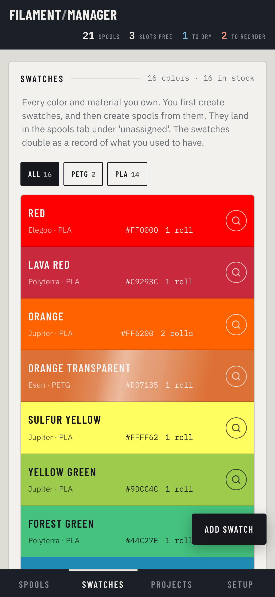
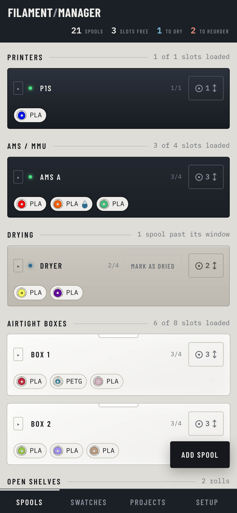

Filament/
Manager
Know where every spool is, which ones need drying, what to buy again and which prints used which filaments.
On your phone
Drying reminders
Know where every spool is, which ones need drying, what to buy again and which prints used which filaments.

